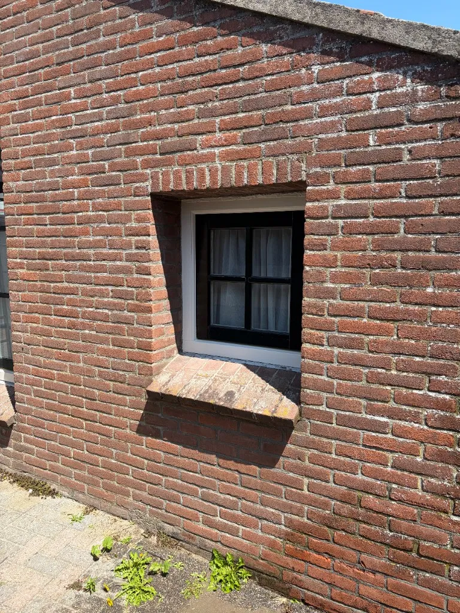
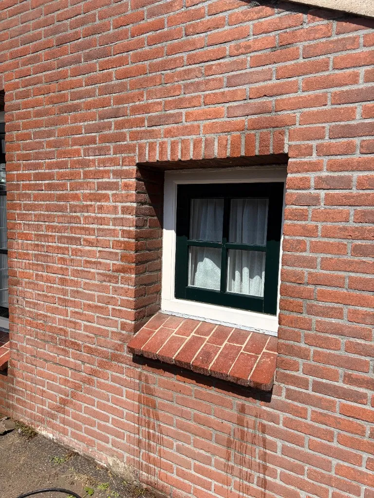

Gevelreiniging Dordrecht
Aanslag, mos en korstmos van baksteen halen, zonder de voeg kapot te spuiten.
Gevelreiniger · Dordrecht
Eerst kijken hoe hard de steen en de voeg zijn.
In Dordrecht reinigen we bakstenen gevels en schoorstenen. Groene aanslag, mos en een grauwe waas maken een gevel ouder dan hij is. Een te harde straal maakt de steen poreus en spoelt de voeg uit. Daarom stemmen we de reiniging af op de steen, niet op een standaardprogramma.
Rond ramen zit de aanslag vaak het hardst, omdat water daar blijft staan. Schoorstenen pakken we mee als het mos op de afdekking zit. Is de voeg daarna nog open, dan voegen we die in dezelfde planning. Is de voeg goed, dan laten we hem met rust.
- Gevelreiniging in Dordrecht en de Drechtsteden
- Mos en aanslag, ook rond ramen
- Schoorstenen meenemen als dat nodig is
- Daarna voegen alleen als de voeg slecht is
Ook in de buurt: gevelreiniging Papendrecht en gevelreiniging Rotterdam.
Zo ziet reinigen eruit
Voor en na: aanslag weg, steen en voeg blijven heel.


Schoorsteen ook groen? Bekijk schoorsteen reinigen, voegen en betonherstel →
Reinigen jullie gevels in Dordrecht?
Ja. Dordrecht is onze standplaats. We halen aanslag, mos en korstmos van baksteen, ook rond ramen en op schoorstenen.
Blijft de voeg heel?
De methode stemmen we af op de steen. Het doel is vuil weghalen zonder de voeg uit te spoelen of de baksteen op te ruwen.
Moet er daarna ook gevoegd worden?
Alleen als de voeg zacht, hol of gescheurd is. Is de voeg nog goed, dan is reinigen vaak genoeg. Zie ook ons voegbedrijf in Dordrecht.
Gevel in Dordrecht laten reinigen?
Stuur een foto van de aanslag. Meestal reactie binnen 24 uur.